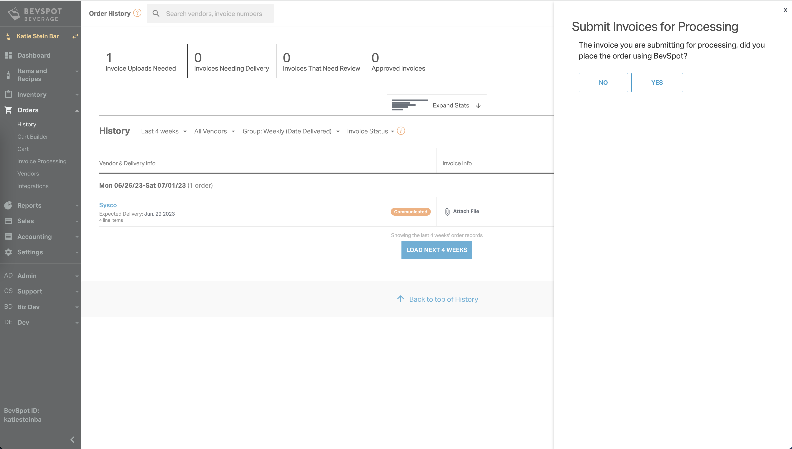

Invoice Processing Adoption
Improving the UX behind the current invoice processing flow to enhance adoption.
The Problem
Users struggle to determine whether they should attach a returned process invoice to an existing order or create a new order. As a result, duplicate orders are frequently generated due to the uncertainty surrounding the items included in the returned processed invoice.
The Solution
- Improve the UX behind submitting processed invoices to attach to order records during submission process
- Improve the UI behind attaching returned processed invoices to ask the right questions to prevent duplication
Determining the User Flows
The initial phase of this project involved identifying and mapping out various user flows to guide the creation of mockups. Numerous decision points were identified, requiring careful consideration and inclusion in the process.


Redesigning the User Flow
After consideration for how users attach returned process invoices to order records today, taking in feedback from current users and customer success, I determined that the easiest solution would be to attach invoices to order records upon upload.
When users were recieving returned process invoices, they had no record of what was actually on the invoice besides the number of items, useless in most scenarios, and the vendor. However, I realized that when a user was uploading an invoice they had full context of what was on the invoice to reference for the order assignment.
After presenting a solution for the uploading of the invoice, I determined that this flow would be incredibly useless for returned invoices that users might get through a third party integration vs uploading it. Presenting the user with leading questions would indicate which action they should take whether to create new or attach to an order placed within app.
Once the plan was established, I proceeded to use Figma for creating mockups illustrating the envisioned flow. To maintain consistency within the application, I aimed to reuse components whenever possible. After considering various options, I settled on a slide-in card design that would contain a questionnaire for the user.
Through collaborative design iterations involving stakeholders, we arrived at a final set of mockups. These mockups were then presented to customers to seek their final approval and endorsement.
Implementation
After a few minor iterations based on their input, I collaborated closely with the backend engineer to implement the new UI. The final design, reflecting these changes, is presented below.


Next Steps
Efficiently processing invoices and linking them to order records is crucial for our users' success. Our upcoming features will involve utilizing AI to identify received items on the invoice and compare them to the ordered items, enabling us to identify any missing items.
Furthermore, we aim to integrate with accounting systems for restaurants and bars, allowing them to manage their financial records with accurate and automatically synced data. Ultimately, we intend to provide the capability to pay invoices directly through our application.
Throughout this journey, we will continuously iterate on the new user interface based on valuable feedback from users as they engage with this feature more and more.